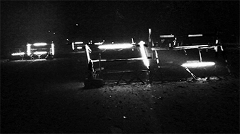

PROJECTS
ABOUT
SOCIAL PRACTICE
RESEARCH
PROJECTS
ABOUT
SOCIAL PRACTICE
RESEARCH
Between Akita City, a small city in Northwest Japan, and my home in Kō Hawaiʻi Pae ʻĀina, the question of where and how to practice research informs my interests in visuality, protest, and indigeneity. In particular, the question of space and the compilation of an audiovisual record, or a written one aligned with a critical vision or voice, leads me into a variety of anchors. From the conceptual side, my work is inspired by Epeli Hauʻofa to think in the archipelagic sense that our "sea of islands" channel and Noenoe Silvaʻs emphasis on indigenous archives as a way to amplify ancestral voices. I locate this political sensibility within Chantal Mouffeʻs thinking about art as an agonistic politics, and Jacques Rancièreʻs thinking of equality as a "redistribution of the sensible." I am also inspired by Pablo Helguera's work on "socially-engaged art," often cited in Japan in the context of regional development (地域振興). Helguera explores SEA as "a form of performance in the expanded field," which blends well with the "field" work (as much as "eventwork") politics of ethnographers like Michael Taussig; but also artists like Apichatpong Weerasethakul who spend long periods of time in community spaces as a way to elicit participation of those who lack access to their own documentation. In this social - political nexus (a dinosaur egg), documentary and fiction accompany a series of performative and critical engagements with "fields" that are extremely different. My experience is based in the archipelagic sense of being a Kanaka Maoli (currently living outside of Hawai'i), but also the pursuit of being a friend, a student and a project collaborator. I am particularly interested in the interpretive and political possibilities of experimentation in documentary film where theorists like Laura Mulvey and Erika Balsom locate those who have been pushed to the margins of visibility.
When my close friend, Zakariya Amataya, spent his artist-in-residence in Hawai'i in 2011, he invited me on several trips to his home in the Thai-Malay borderlands. I finally made several trips there between 2015 and 2019, and observed the unique challenges of writers and resistance movements who continue their work under a martial law military occupation. Assisting with a variety of tasks that included poetry translation, audio recording and short film production, I sought to explore the possibilities of social practice in the production of a collaborative work. In many cases, the idea of a field and a space of exhibition seemed to converge. In Narathiwat and Pattani, Thailand's majority Muslim provinces, art galleries like De'Lapae Art Space almost always curate social events and writers hubs at least as much as they produce symbolic work tied to the exhibition of local artists. The gallery cafes supplement artist income, as the exhibition halls become a cartographic space for rezoning conflict beyond the representations of military maps and checkpoints. Under martial law, and in the exhibition, the actuality of violence coalesces with the symbolic encounter in the gallery. Sometimes diplomats visit to think through (as much as contemporary political thought) visibility and resonance in political subjectivities that transcend fundamentalism and/or militarization. Sometimes, the relationship between the part and the whole prefigure the landscape. At Patani Art Space, an impromptu infrastructure of military roadblocks manned by over 70,000 Thai soldiers was retranslated in local context--where the install and deinstallation of a military checkpoint enacted the modularity of the occupation as much as the vision of its end.
In the everyday landscapes of the Hawai'i pae 'Aina, statues, street names and murals attest to intersections of the actual and the symbolic, as much as an exhibition of the films of Nā Maka O Ka ʻĀina (Puhipau and Joan Lander) at the Hawaiʻi State Art Museum exhibited the convergence of activism and the apparatus of film and art. In 2013, Nā Maka O Ka ʻĀina hosted a workshop for my political theory students at UH-Hilo. Each of the students would engage the medium in a community issue of their choosing as a way of critiquing the materialization of ideology in local context. In their short films, we can see social expression layered in the realm of the symbolic. Students who went out to film the contested TMT permit hearings, or observe the rituals of the Merrie Monarch Hula competition that semester were sure to recognize the interplay of signs, songs, and language in a specific time of protest. These beautiful memories link to an extensive record of indigenous voice.
In Japan, my courses draw from my collaborative social practice in the borderlands and community engagement as an indigenous person rooted in Hawaiʻi. My courses in Visual Politics and Social Movements, explore local "modes of production" that range from the visualization of place in creative media to the networks of collaboration that link administrative policy with the transformation of traditional life (from the actual rebranding of local commodities to a performance of a fictional political party in one of Japan's most dominant commercial spaces--Aeon Mall). To augment my classes, we recently inaugurated a student living space (Indigenous House) organized and programmed around indigenous advocacy. The house was inspired by experience advising students from Ainu and Ryukyu backgrounds and the need to encouarge a more complex linking between indigenous practices in Japan (which remain marginal) and those of other Pacific Islands familiarized through transnational networks of tourism and histories of war.